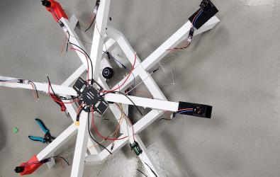
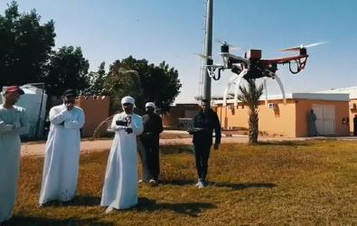
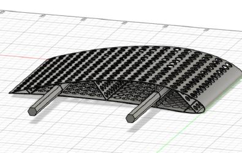
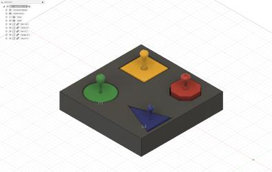
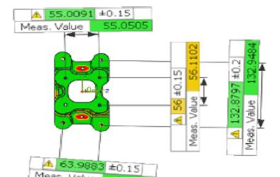

I am a recent graduate from the UAEU, with a strong focus on drone research and development. During my academic journey, I have been fortunate to excel in areas such as drone-based design, manufacture, and control of a fully autonomous flight. Through leading innovative projects and achieving breakthroughs, I have had the privilege of receiving recognition and establishing a positive reputation within the industry. With an unwavering commitment to innovation, my goal is to explore new possibilities and contribute significantly to the field of drone technology. I am genuinely excited about pushing the boundaries of what drones can accomplish in the future, driven by my past accomplishments and dedication to excellence. If you have any questions feel free to reach out on LinkedIn, Github, or by email!
DOWNLOAD MY RESUMEI designed and simulated a power transmission system for a robot, ensuring efficient energy transfer. I also designed and fabricated frame locking mechanisms to enhance the stability and rigidity of various components. Additionally, I developed and manufactured a testing model to gather experimental data, and utilized 3D printing technology for rapid prototyping, streamlining the development process.
Designed and Developed a Detumbling algorithm for AlAinSAT-1 on MATLAB and utilized system identification algorithm to deduce the transfer function
Along completing my courses, I contributed in several publications and projects related to drones, manufacturing, and CAD modelling
0
CUPS PER DAY
0
PROJECTS
0
PUBLICATIONS
‘Our project aims to develop an autonomous thermal human detecting drone for security purposes. The primary objective is to enhance safety in specific conditions by minimizing risks faced by personnel. To achieve this, we have designed and manufactured an octa-rotor with a unique configuration capable of carrying payloads up to 6 kilograms. It boasts a 15-minute endurance and is equipped with a LEPTON FLIR 3.5 module. This module enables temperature differentiation between the human body and the surrounding environment at a height of 10 meters and an angle of 40 degrees. The drone transmits real-time data and thermal camera footage to a ground station, providing the user with vital parameters such as location and live surveillance footage of the environment.’
In our innovative project, we employed an instrumented glove equipped with cutting-edge technology to seamlessly translate physical hand movements into precise commands for controlling a drone. By combining an Arduino Nano microcontroller, an Inertial Measurement Unit (IMU), and a combination of potentiometers and switches, we created a sophisticated interface. This unique setup allowed us to effortlessly switch between different flight modes and activate various safety features with ease. The IMU captured and analyzed the motion data from the glove, while the Arduino Nano processed the signals and translated them into real-time instructions for the drone. The integration of these components resulted in a seamless and intuitive control system that revolutionized the way we interact with drones.
Using Fusion 360, a powerful CAD software, I designed a custom wing for my 3D printed fixed-wing RC plane. Leveraging the advanced capabilities of Fusion 360, I created a wing design tailored to my specific requirements. I utilized cutting-edge 3D printers such as the Ultimaker S5, Creality 6 Max, FlashForge Finder, and Inventor II to materialize my design. These state-of-the-art printers offered exceptional precision and reliability, resulting in an accurately detailed wing.
In collaboration with the Mohammed Bin Rashid Space Center, we developed the Drover—a groundbreaking fusion of a drone and a rover. This innovation aimed to enhance space exploration capabilities by enabling flight over obstacles. The Drover revolutionized efficiency and reduced traversal time, overcoming obstacles that would impede a rover’s progress. This pioneering design expanded the horizons of space exploration and opened up new possibilities for optimized missions beyond Earth.

Using cutting-edge 3D printing technology, I have developed a comprehensive set of tools designed to assist and support individuals with special needs. This project is part of a broader effort to leverage technology for social good, focusing on enhancing the daily lives and capabilities of people with various physical and cognitive challenges.
The research project focuses on investigating the impact of resistance spot welding parameters on the strength of welds in metal sheets. This technique is widely used in the automotive and aviation industries. Using the welding simulation software Simufact Welding 2020, various parameters such as holding time, squeeze time, welding current, force applied, and welding time are examined. Optimal regions for these parameters are identified through extensive analysis. The research aims to optimize resistance spot welding processes and enhance the quality of welded joints in metal sheets by determining the ideal parameter settings.

This project explores the integration of Spider 3D scanner and Control-X inspection software for quality control in aerospace manufacturing. The Spider 3D scanner provides highly accurate measurements without errors, while Control-X software offers versatility for various applications. By comparing conventional methods with photogrammetry, the research highlights its advantages. Results show accurate measurements within an acceptable range of error for linear geometric features. Photogrammetry outperforms manual methods for inspecting form, shape, and dimensions in manufacturing processes.
